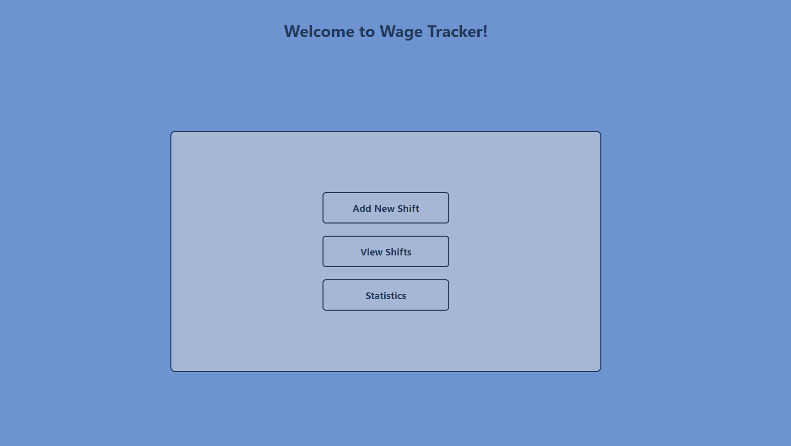
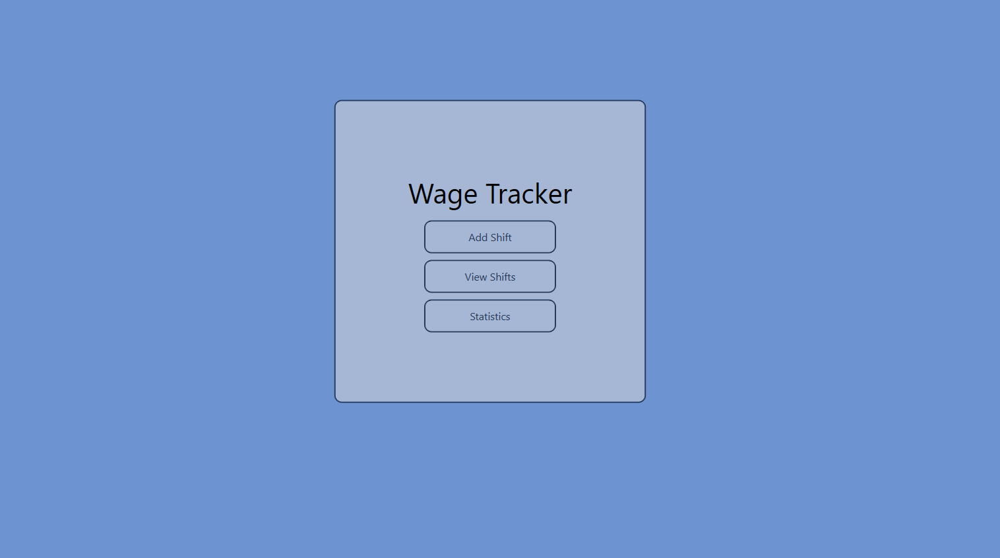
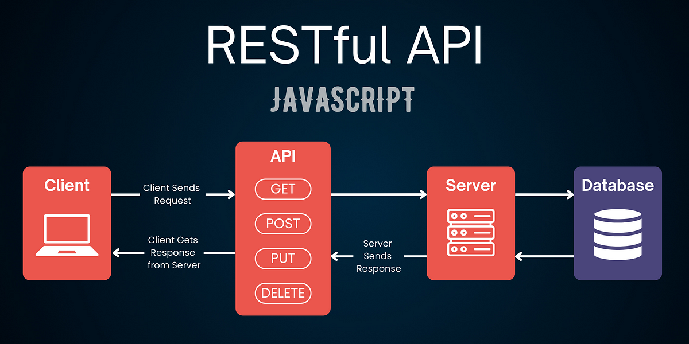
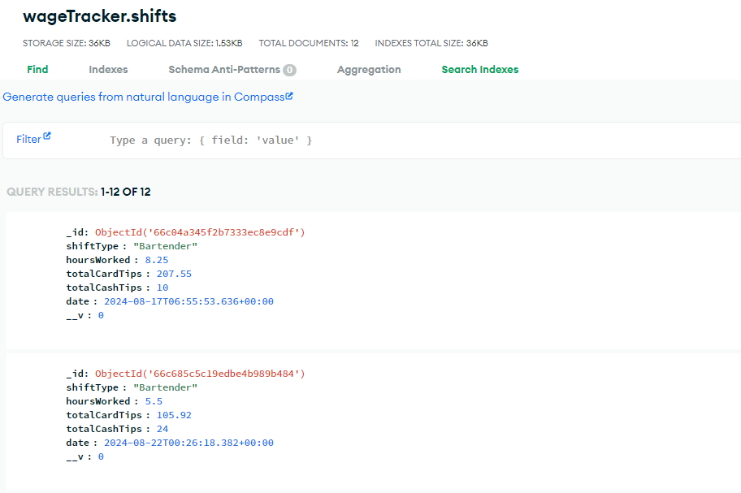

Professional Self Assessment
Throughout my journey in the Computer Science program, I have developed a diverse skill set that spans software engineering, data structures, algorithms, database management, full stack development, cyber security, and UI/UX design. I have also studied common project organization techniques such as Waterfall and Agile.
More importantly than the Computer Science skills I have learned, this program has taught me how to understand and learn new topics easily. The further along I got through the program, the faster I was able to understand new concepts, frameworks, and even programming languages. My ability to learn how to solve different problems has flourished with my time in the Computer Science program. This can be seen as marginally more significant than the specific skills I have learned, as the ability to learn new things efficiently is one of the most important skills I could possess in the workforce.
To support my understanding of these concepts, I have enhanced a project that I built for food service workers to track their tips. I call the application "Wage Tracker," made with React and TypeScript. I first developed the application in my second year in college, when I was still fairly new to software development. I chose to select this application for all three enhancements because it was in the perfect place of development to implement all three categories, and it is an app I use in my personal life, so enhancing its functionality benefits me in the long run. The original code contained little to no comments, a lack of data persistence (no database), and a lack of any useful data structures and algorithms. These enhancements not only highlight my experience in the skills listed above, but also showcase my ability to communicate with both technical and non-technical audiences.
Original Code Review
Download OriginalEnhancement 1: Software Engineering
To showcase my skills with Software Engineering, I have decided to clone my Wage Tracker app into a desktop application using C# and WPF. This enhancement demonstrates my ability to reverse engineer a product, and highlights my skills to create clean and effective software regardless of the programming language.
Course outcomes met
- I designed and evaluated computing solutions that solve a given problem using algorithmic principles and computer science practices and standards appropriate to its solution, while managing the trade-offs involved in design choices.
- I demonstrated an ability to use well-founded and innovative techniques, skills, and tools in computing practices for the purpose of implementing computer solutions that deliver value and accomplish industry-specific goals.
- I designed, developed, and delivered professional-quality oral, written, and visual communications that are coherent, technically sound, and appropriately adapted to specific audiences and contexts.
Reverse engineering an application to create it in a new language required the ability to evaluate the current project and break it down into its core components. This was then used as a blueprint for developing the product into the new language, while balancing tradeoffs in design while keeping the core functionality as similar as possible.
React and TypeScript are very popular programming tools for developing web applications, while WPF with C# is very popular for creating desktop applications. My ability to first create the web application in React and then clone it into a desktop application in WPF showcases my grasp on many of the modern tools and computing solutions that are desired by employers. Cloning products like this is also an example of an industry-specific goal that could very well be asked of me at a professional setting.
I developed this enhancement in a way where anyone could delve into the code and understand how it is built and how it works. This was done by effective inline and header comments, as well as descriptive variable and file names. My ability to communicate my design choices and project structure through the code itself is evident in this project.
React Wage Tracker Home Screen
C# Wage Tracker Home Screen
Enhancing the artifact taught me how to adapt an application to a new framework (from React to WPF) while maintaining its core functionality. I learned how to manage user input more efficiently, optimize application performance, and create a better experience with enhanced UI design. A major challenge I faced was the transition from a web-based design approach to a desktop-based environment. I had to rethink how navigation and state management work in WPF compared to React. Additionally, dealing with data display in WPF required careful attention to styling and alignment to maintain clarity and usability. It also took some time to learn the different ways to style the application, as WPF has different styling rules than CSS. Overcoming these challenges strengthened my problem-solving abilities and deepened my understanding of desktop application development.
Download Enhancement 1Enhancement 2: Algorithms and Data Structures
The enhancement I selected for this category is a Doubly Linked List (DLL) that uses an Insertion Sort algorithm. Initially, the project used an array-based structure for managing shifts, but I replaced it with a DLL and incorporated the Insertion Sort algorithm for dynamic sorting based on criteria such as date, hours worked, tips, and total earnings. This transition showcases my ability to apply complex data structures and algorithms to solve real-world problems efficiently.
The main motivation for using a Doubly Linked List over an array was to improve insertion and deletion performance. Arrays have a time complexity of O(n) for inserting or removing elements, which becomes inefficient when dealing with frequent modifications. A DLL, however, allows for O(1) insertion and deletion by manipulating pointers, making it well-suited for dynamically managing shifts. This change also demonstrates my understanding of memory management, as a DLL requires careful handling of 'prev' and 'next' pointers.
To further enhance the flexibility of the ViewShifts page, I implemented an Insertion Sort algorithm tailored to work with the DLL. While this algorithm has a time complexity of O(n²), it is efficient for the smaller datasets typical in the Wage Tracker. The trade-off was justified because sorting is done less frequently than inserting shifts. The process of adapting the Insertion Sort to a DLL, which requires sequential traversal of nodes instead of direct indexing like arrays, challenged me to improve my understanding of node traversal and pointer manipulation.
Course outcomes met
- I designed and evaluated computing solutions that solve a given problem using algorithmic principles and computer science practices.
- I demonstrated an abililty to use well-founded and innovative techniques, skills, and tools in computing practices for the purpose of implementing computer solutions that deliver value and accomplish industry-specific goals.
By replacing an array-based system with a more efficient doubly linked list, I improved both the flexibility and performance of my Wage Tracker application. This design choice allowed me to manage the trade-offs between ease of implementation and performance, which are key considerations when working with complex data structures and algorithms.
By implementing the DLL with the Insertion Sort, I displayed my ability to make a design choice based on the expected use of the application, and pick a data structure and algorithm to implement sorting and improve insertion, without changing the core functionality of how data is stored and used in the application.
Insertion Sort Diagram

Implementing the DLL and Insertion Sort involved several challenges, particularly with sorting linked nodes. Unlike arrays, linked lists require traversal from the head node to find the correct insertion point, making pointer manipulation and memory management crucial. I also had to account for edge cases like inserting nodes at the beginning or end of the list, which required careful consideration of list integrity. The enhancements I made to the Wage Tracker project demonstrate my ability to integrate advanced data structures and algorithms into a real-world application. By improving the performance and functionality of the ViewShifts page, this artifact highlights my skills in algorithms and data structures, and shows that I understand the trade-offs between them.
Download Enhancement 2Enhancement 3: Databases
For this enhancement, I created a server-side Express.js application that connects to a MongoDB database to manage shift data for the wage-tracking system. The project provides full CRUD (Create, Read, Update, Delete) functionality for storing and retrieving shift records, including details such as shift type, hours worked, and tips received.
I selected this enhancement because it demonstrates my proficiency in working with databases, a crucial skill in software development. The project highlights my ability to implement back-end solutions using modern frameworks such as Express.js and MongoDB. It also showcases my understanding of how to design RESTful APIs to interact with a database, validating user input, and ensuring data integrity throughout the application. By enhancing this artifact, I was able to incorporate industry best practices, such as implementing schema validation using Zod for robust error handling and improving the overall security of the application by adding data validation checks.
This artifact is an important representation of my database skills because it involves not just storing data but also designing a backend server with a REST API that allows for flexible manipulation of that data. This has practical applications in many areas of software development, such as building scalable web applications, which are core components of modern software engineering. It also showcases my skills on error handling, input validation, and the use of environment variables, which all show a good foundation of security focused programming.
Course outcomes met
- I employed strategies for building collaborative environments that enable diverse audiences to support organizational decision making.
- I demonstrated an ability to use well-founded and innovative techniques, skills, and tools in computing practices for the purpose of implementing computer solutions that deliver value and accomplish industry-specific goals.
- I developed a security mindset that anticipates adversarial exploits in software architecture and designs to expose potential vulnerabilities, mitigate design flaws, and ensure privacy and enhanced security of data and resources.
This artifact demonstrates my ability to work with databases and APIs, which are essential for creating collaborative environments. By structuring the backend in a modular, scalable manner, I’ve ensured that future developers or collaborators will be able to integrate, modify, and extend the system easily. The clear and well-documented routes for API calls enable diverse teams to understand how to interact with the system, facilitating better decision-making.
The choice of technologies, such as Express.js, MongoDB, and Zod for validation, showcases my ability to implement modern, industry-standard tools to build efficient solutions. The enhancements made to this artifact demonstrate my ability to combine these tools effectively to create a robust, full-stack application, from the back-end to the database layer. These skills are valuable in real-world software engineering, where understanding and using the right tools is key to delivering value.
While working on this enhancement, I focused on security improvements by adding schema validation and ensuring that user input is strictly controlled before being sent to the database. By using the validation library Zod, I made sure that invalid or malicious data could not enter the database, reducing the risk of attacks such as injection vulnerabilities. This demonstrates my ability to anticipate security flaws and develop solutions to mitigate them.
REST API
MongoDB Table
Through this enhancement process, I learned a lot about the importance of validation and security when working with databases. Initially, the artifact lacked any form of input validation, which posed a risk for data corruption or potential security vulnerabilities. By incorporating validation mechanisms with Zod, I not only enhanced the security of the system but also improved its robustness by ensuring that only valid data could be entered into the database. One of the biggest challenges was learning how to handle complex validation errors and returning them in a user-friendly format. This experience taught me how crucial proper error handling is for user experience and security.
Additionally, I reinforced my understanding of database interaction with MongoDB, particularly how to design efficient queries for retrieving, updating, and deleting data. This practical experience in manipulating database records in a secure, reliable manner was invaluable for solidifying my skills in backend development.
Download Enhancement 3